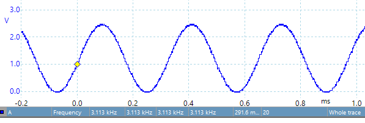
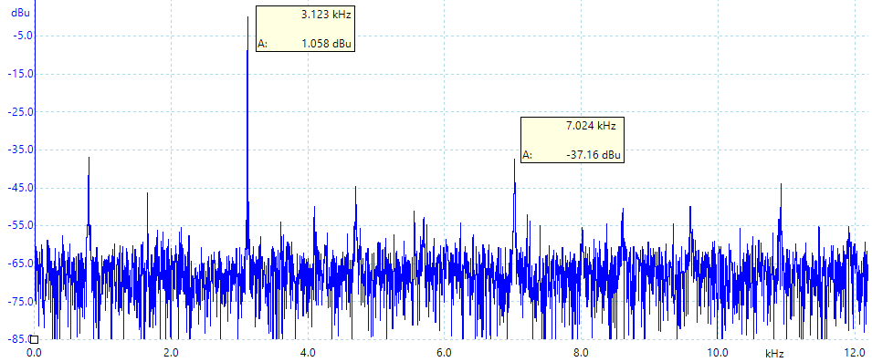

|
Readme
This is a C language project that configures
the DAC in a simple software output.
The analog reference of 2.5V is used for the DAC.
In the first main, the DAC output occurs in the main program,
with digital input varying from 0 to 4095.
In the second main, the DAC output is updated within the TimerG0 ISR,
creating a sinusoidal wave.
The following scope trace shows the DAC output on PA15. The frequency of
the sine wave output is
frequency = Interrupt Frequency / Table size
= 200kHz/64 = 3.125kHz

The spectrum analyzer shows a 1.058dB peak at 3.123 kHz (signal)
and a -37.16dB peak at 7.024kHz (noise).
We can calculate SNR as 1.058 minus -37.16dB = 38.2dB.
One might expect the SNR of a 12-bit DAC to be 20*log(2^12) = 72dB.
However, without an analog filter, the SNR is limited by the size
of the table, 20*log(64) = 36.1 dB. You can see individual steps in the above
analog trace.

Derived from Texas Instrument code
- dac12_fixed_voltage_vref_internal_LP_MSPM0G3507_nortos_ticlang
- dac12_fifo_timer_event_LP_MSPM0G3507_nortos_ticlang
- timx_timer_mode_periodic_sleep_LP_MSPM0G3507_nortos_ticlang
- gpio_toggle_output_LP_MSPM0G3507_nortos_ticlang
|